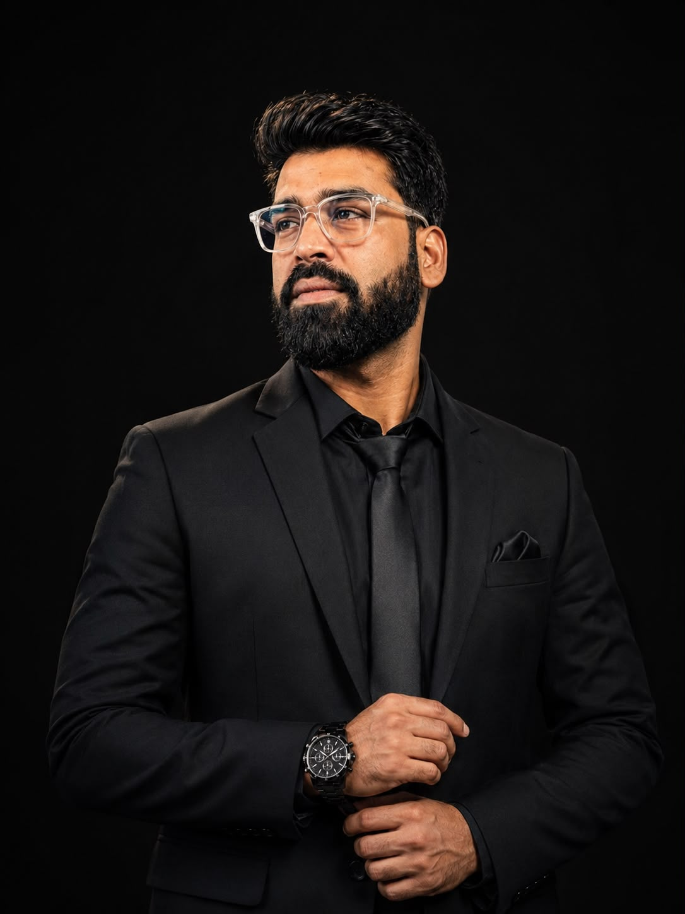

From your first class to your first job.
AlliedPath teaches and mentors allied health students wherever they are. Learn with faculty who teach it every day, clear every doubt, do real research, walk into interviews prepared, and get guidance on where to get placed.
- Online, for students in any country
- Taught by allied health faculty
- Teaching & mentoring, no certificates
Five steps from classroom to career
Everything a student needs between the first class and the first job, all focused on allied health programs.
- 01
Learn
Live online classes that follow the NCAHP curriculum, from the basics to clinical practice.
- 02
Clear doubts
Ask a faculty member and get it explained until it really makes sense.
- 03
Do research
Pick a topic, plan a study and write it up with the ResearchMed Connect team.
- 04
Ace the interview
Mock interviews and viva practice, with honest feedback before the big day.
- 05
Get placed
Where to apply, a CV that shows your skills, and what hospitals look for.
We guide you towards placements; we do not promise jobs.
Allied health only. Nothing else.
We start where our faculty are strongest and add more allied health streams step by step.
Anaesthesia & Operation Theatre Technology
For B.Sc. and diploma students in anaesthesia and OT technology, and for working technologists who want to sharpen their basics.
- Anaesthesia machines, airway and monitoring
- OT setup, sterilisation and patient safety
- Clinical case discussions and viva practice
Tell us which one you need in the form below:
- Critical Care Technology
- Cardiac Care Technology
- Dialysis Therapy Technology
- Medical Laboratory Sciences
- Radiology & Imaging Technology
- Emergency & Trauma Care
- Respiratory Therapy
Step inside an operation theatre, in 360°
Walk through a fully equipped OT from five viewpoints. Tap any equipment to see close-up photos, how it works and the checks every OT technologist must know, then test yourself with a quiz.
- 5viewpoints
- 15equipment stops
- 8quiz questions
- Anaesthesia workstation, monitor, diathermy, suction and crash cart
- Medical gases, laminar airflow and biomedical waste segregation
- Voice guide in 11 Indian languages, plus English. No sign-up needed.
Pick a batch that fits your week
Live online classes in small groups. Times are shown in India time and in your own time zone.
From first message to your first job
- 1
Tell us about you
Your program, year, country and what you need help with.
- 2
Get matched
We connect you with a faculty member for your stream.
- 3
Learn & ask
Live online sessions plus help with doubts in between.
- 4
Build your profile
Research work, a strong CV and placement guidance.
- 5
Interview ready
Mock interviews and feedback before the real one.
Book a free 30-minute demo class
Meet a faculty member, see how a session works and ask your questions. No payment, no pressure.
Learn from people who teach it every day
Every AlliedPath teacher is an allied health educator or experienced clinician in the subject they teach.
Tap a faculty ID card to see the full profile.
Start learning today, for free
Notes, videos and a practice quiz from our faculty.
Follow AlliedPath, learn something every day
A free question on WhatsApp every morning and quick lessons on Instagram, wherever you already spend time.
Learn from allied health faculty, from any country
All sessions are online, so where you study does not matter. You get:
- Teaching matched to your program and year
- A real person to ask when you are stuck
- Guidance on research, placements and interviews
Teach with AlliedPath
Are you an allied health educator or experienced clinician? Teach and mentor students from India and abroad, online, on a schedule that suits you.
- Teach the subjects you know best
- Mentor students one-to-one or in small groups
- Be part of a growing allied health community
Teaching and mentoring only
AlliedPath guides and teaches. We do not issue certificates, diplomas or degrees, and we are not a university or a registered training institution. Your qualification comes from your own college or university. "NCAHP-aligned" means our teaching follows the published NCAHP curriculum; AlliedPath is not affiliated with or endorsed by the National Commission for Allied and Healthcare Professions.
From our students

Dr. Zakir Hussain Parray
Ph.D. (Anaesthesia & Trauma), M.Sc. (Anaesthesia & Operation Theatre Technology), B.Sc. OTT · Founder, ResearchMed Connect
An allied health educator who has spent his career teaching anaesthesia and operation theatre technology. He started AlliedPath so that allied health students everywhere can get the teaching, mentoring and career guidance they need.
- 9books published
- 30research papers
- EICFounding Editor-in-Chief, TORGJ
- Pan-IndiaHOD & Master Trainer, AOTT
“Learn continuously, lead responsibly, and create an impact that extends beyond the classroom.”
Register, book a free demo or ask a doubt
Pick one. Each opens a short form, and we reply personally, usually within a day.
- No payment or commitment to register
- Students and faculty from any country are welcome
- Your details are used only to contact you about AlliedPath
Good questions
Is AlliedPath online?
Yes. Sessions are held online, so students can join from any country.
Will I get a certificate?
No. AlliedPath only teaches and mentors. Your degree or diploma comes from your own college or university.
Who can join?
Students of allied health programs, working allied health professionals who want to strengthen their knowledge, and allied health faculty who want to teach.
What does it cost?
Registering your interest is free. Session details and fees will be shared with you personally before you decide anything.
How is this connected to ResearchMed Connect?
AlliedPath is a separate teaching and mentoring platform from the founder of ResearchMed Connect. For research and publication help, ResearchMed Connect continues as before.